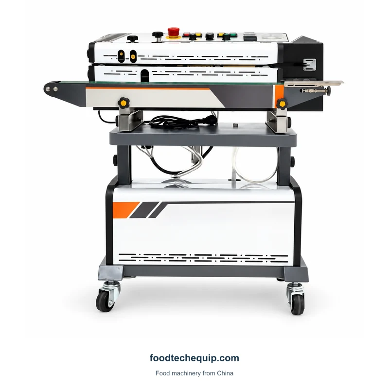

장비 카테고리
봉투용 연속 밴드 실링기
충전된 봉투가 실링부에 들어가는 방식에 맞춰 연속 밴드 실링기를 선정해 주세요. 탁상형과 수직 컨베이어형을 비교하고, 진공이나 가스 치환이 필요한지 확인해 주세요.


봉투 실링
수직형 연속식 밴드 실링기 — FR-1100V·FRD-1200V
봉투를 받치는 컨베이어가 있는 수직형 연속식 밴드 실링기입니다. FR-1100V와 FRD-1200V 구성이 있습니다.
장비 보기


일치하는 장비가 없습니다
다른 키워드를 시도하거나 필터를 지우십시오.
선택 고려 사항
백 또는 튜브 밀봉 공정 선택 ↗충전 후 봉투에 맞춰 밴드 실링기 선정
채워진 무게, 가방 높이 및 제품 위의 공간을 입력하십시오. 이러한 세부 사항은 봉인 위치에 도달하고 이동 중에 지지되어 있는 방법을 정의하는 데 도움이 됩니다.
진공 또는 가스 플러싱 구성의 경우, 밀봉 속도와 별도로 대기 및 완성 팩 요구 사항을 지정하십시오.
귀하의 문의에 대한 유용한 정보
- 가방 구조 및 입 폭은 무엇입니까?
- 채워진 가방은 어떻게 보관되고 이동됩니까?
- 가스 처리가 실제로 필요한 프로세스의 일부인가요?
연속 밴드 실링기 구성과 비교 항목
| 선택 영역 | 비교 항목 | 제공할 사항 |
|---|---|---|
| 탁상형 밴드 실링기 | 작업대 공간과 봉투 투입·회수 시 컨베이어 접근성 | 충전 후 봉투의 치수와 질량, 작업대 여유 공간 |
| 높이 조절식 수직 밴드 실링기 | 봉투를 세워 지지하는 방식과 실링선 높이 | 충전 후 봉투의 높이와 질량, 실링 위치 |
| FR-1100V 및 FRD-1200V | 모델별 기재 실링 속도와 봉투 투입 방식 | 대상 봉투와 취급 방식에 필요한 분당 포장 수 |
| 진공 또는 가스 치환 | 선택한 사양의 공기 제거, 가스 치환, 실링 순서 | 봉투 구조, 목표로 하는 봉투 내부의 기체 조건, 완성 포장 요건 |
이 작업이 프로세스에 어디에 맞는지
내용물을 채운 봉투와 받침 위치부터 알려 주세요. 별도의 정량 공급이나 진공 처리 작업이 필요하다면 견적에 반영할 수 있도록 함께 알려 주세요.